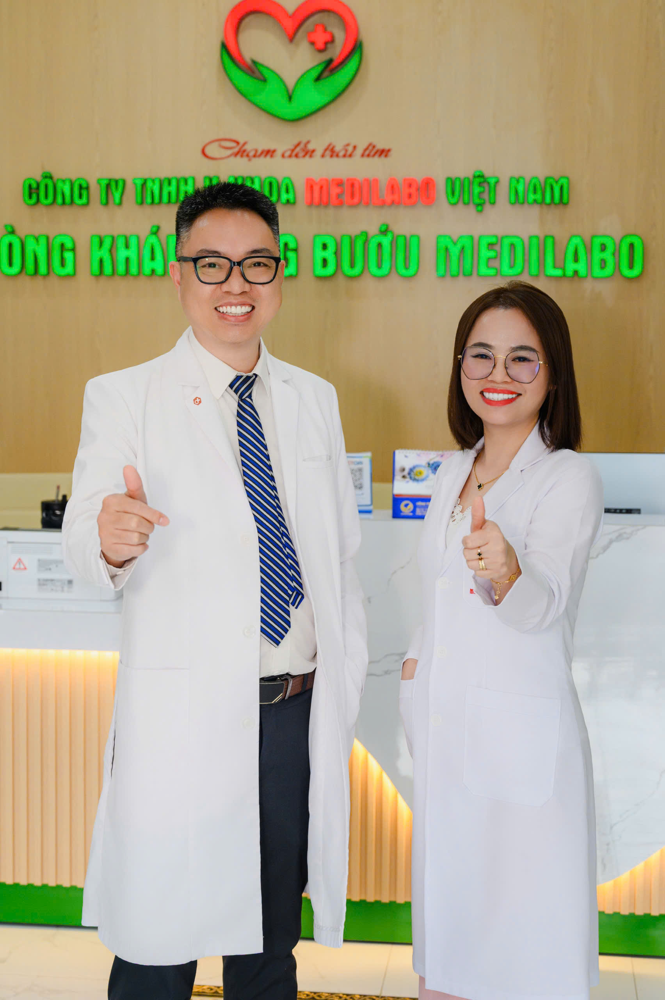

⚡ TOPLIST BÁC SĨ GIỎI
👉 BS.CKII Nguyễn Duy Trì – Chuyên gia Y học hạt nhân trong điều trị ung bướu
Trong lĩnh vực điều trị ung thư hiện đại, Y học hạt nhân đóng vai trò ngày càng quan trọng trong chẩn đoán sớm, đánh giá giai đoạn bệnh và điều trị chính xác. Một trong những bác sĩ có nhiều kinh nghiệm trong lĩnh vực này tại TP.HCM là BS.CKII Nguyễn Duy Trì, hiện đang công tác tại Khoa Y học hạt nhân – Bệnh viện Ung Bướu TP.HCM.
Bác sĩ Nguyễn Duy Trì là chuyên gia có thâm niên trong lĩnh vực tầm soát, chẩn đoán và điều trị các bệnh lý khối u, đặc biệt chuyên sâu về các bệnh lý tuyến giáp, tuyến vú...CHUYÊN MÔN VÀ VỊ TRÍ CÔNG TÁC BS.CKII Nguyễn Duy Trì hiện giữ chức vụ Phó Trưởng khoa Y học hạt nhân tại Bệnh viện Ung Bướu TP.HCM – một trong những bệnh viện chuyên khoa ung bướu tuyến cuối của khu vực phía Nam. Với trình độ Bác sĩ Chuyên khoa II, bác sĩ Nguyễn Duy Trì có nhiều năm kinh nghiệm trong lĩnh vực ứng dụng y học hạt nhân phục vụ chẩn đoán và điều trị các bệnh lý ung thư. Đây là chuyên ngành sử dụng các đồng vị phóng xạ và kỹ thuật hình ảnh hiện đại nhằm phát hiện tổn thương sớm, đánh giá đáp ứng điều trị cũng như hỗ trợ điều trị một số loại ung thư. Y học hạt nhân ngày nay không chỉ giúp phát hiện ung thư ở giai đoạn sớm mà còn hỗ trợ bác sĩ lựa chọn phác đồ điều trị phù hợp cho từng người bệnh. Dưới sự phối hợp của đội ngũ đa chuyên khoa, bác sĩ Y học hạt nhân tham gia: 👉 Chẩn đoán và đánh giá giai đoạn ung thư. 👉 Theo dõi hiệu quả điều trị. 👉 Phát hiện tái phát hoặc di căn. 👉 Điều trị bằng đồng vị phóng xạ đối với một số bệnh lý như ung thư tuyến giáp biệt hóa và các chỉ định chuyên biệt khác. 👉 Hỗ trợ lập kế hoạch điều trị chính xác, cá thể hóa cho từng bệnh nhân. 👉 Bệnh viện Chuyên khoa Mắt Cao Thắng

Bác sĩ CK2 Ung Bướu Nguyễn Duy Trì & CEO Nguyễn Thanh Tịnh - Phòng khám Medilabo Việt Nam
TẬN TÂM VỚI NGƯỜI BỆNH
Bên cạnh chuyên môn, BS.CKII Nguyễn Duy Trì luôn cùng ekip chuyên khoa Ung Bướu hướng đến mục tiêu nâng cao chất lượng điều trị, tối ưu hiệu quả và đảm bảo an toàn cho người bệnh. Việc ứng dụng các kỹ thuật hiện đại giúp: 👉 Tăng khả năng phát hiện tổn thương sớm. 👉 Đánh giá chính xác mức độ bệnh. 👉 Giảm các can thiệp không cần thiết. 👉 Theo dõi điều trị một cách khoa học và hiệu quả. Công tác tại Bệnh viện Ung Bướu TP.HCM Bệnh viện Ung Bướu TP.HCM là bệnh viện chuyên khoa đầu ngành về ung thư tại khu vực phía Nam, tiếp nhận số lượng lớn bệnh nhân từ nhiều tỉnh thành trên cả nước. Trong hệ thống chuyên môn của bệnh viện, Khoa Y học hạt nhân là một trong những đơn vị quan trọng, phối hợp chặt chẽ với các khoa Ngoại, Nội ung bướu, Xạ trị, Giải phẫu bệnh và Chẩn đoán hình ảnh nhằm xây dựng chiến lược điều trị toàn diện cho người bệnh. Với chuyên môn sâu trong lĩnh vực Y học hạt nhân và vai trò Phó Trưởng khoa tại Bệnh viện Ung Bướu TP.HCM, BS.CKII Nguyễn Duy Trì là một trong những bác sĩ góp phần phát triển các kỹ thuật chẩn đoán và điều trị ung thư hiện đại. Sự kết hợp giữa kiến thức chuyên môn, kinh nghiệm thực tiễn và tinh thần tận tâm với người bệnh đã giúp bác sĩ cùng tập thể Bệnh viện Ung Bướu TP.HCM mang đến những giải pháp điều trị ngày càng hiệu quả, góp phần nâng cao chất lượng chăm sóc bệnh nhân ung thư.
Phòng khám Chuyên Ung Bướu Medilabo Việt Nam.
Bác sĩ CK2 Nguyễn Duy Trì hiện đang phụ trách chuyên môn ngoài giờ cho Phòng khám chuyên khoa Ung Bướu Medilabo tại TPHCM. Tại đây, bệnh nhân được trực tiếp tư vấn, tham khám, chuẩn đoán và theo dõi các bệnh lý ung bướu tốt nhất. Phòng Khám Chuyên Khoa Ung Bướu Medilabo Việt Nam do BS.CKII Nguyễn Duy Trì - Phó Khoa Y Học Hạt Nhân Bệnh Viện Ung Bướu TPHCM trực tiếp phụ trách chuyên môn.
PHÒNG KHÁM CHUYÊN KHOA UNG BƯỚU MEDILABO
Địa chỉ: 486 Hoàng Hữu Nam, Long Bình, Hồ Chí Minh
📍 Chỉ đường đến Phòng Khám Ung Bướu MEDILABO